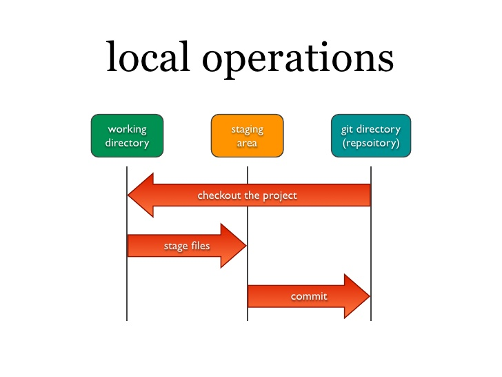
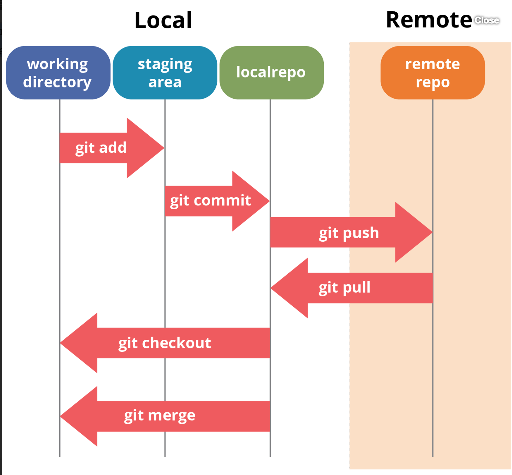

name: inverse class: center, middle, main-title # Alguns passos em Git e Git-Flow Laboratório de Programação --- # O que é? <center> </center> - Sistema de controle de versões distribuído - Inicialmente projetado e desenvolvido por Linus Torvalds - Cada diretório é um `repositório` --- #Características - Trabalha com `Snapshot` dos arquivos (a cada commit) - Maior parte das operações locais são locais evitando excesso de conflito - Mantém `integridade` com checksum - Estados de operação: `commited` `staged` `modified` <center>  </center> --- #Instalando - Disponível pelo site https://git-scm.com/downloads - Linux pode usar o apt-get - Mac pode usar o ports --- #Comandos Git - Inicializar um repositório: `git init` - Se já possuir um repositório: `git clone <URL>` - Para gravar alterações: - adicionar arquivos `git add <arquivo>` - ou adicionar todos na pasta atual `git add .` - Fazendo um commit: `git commit -m "<mensagem obrigatória>"` - Verificando o estado do repositório: `git status` - Removendo arquivo: `git rm <arquivo>`. E depois commit - Histórico de commits: `git log` --- #Repositório Remoto - Adicionar um GitHub ou semelhante - Para adicionar um repo remoto: `git remote add orign <URL>` - Para visualizar o repo remoto: `git remote -v` --- #Enviando e obtendo - Para enviar: `git push orign master` - Para obter: `git pull` / `git fetch` <center>  </center> --- #Tags - Para criar uma tag `git tag -a v1.0` - `git show v1.0` --- #Branches - Para criar uma ramificação: `git branch teste` - ou criar e modificar: `git checkout -b <branch_name>` - Para trocar uma banch `git checkout teste` - Para fazer o merge: - `git checkout master` - `git merge <branch>` - cuidado com os conflitos! <a href="https://git-scm.com/book/en/v2/Git-Branching-Basic-Branching-and-Merging">Mais detalhes do funcionamento</a> --- #Git-Flow: uma boa ideia de uso - Como organizar o Git? - Uma boa sugestão: `Git Flow` <center> <img src="git-workflow-release-cycle-4maintenance.png" width="500"> </center> --- #Referências - Site com comandos GIT: <a href="https://www.nobledesktop.com/learn/git/git-branches"> Git Branches: List, Create, Switch to, Merge, Push, & Delete </a> - Livro do Git: <center> <a href="https://git-scm.com/book/en/v2"><img src="progit2.png" width="300"></a> </center>